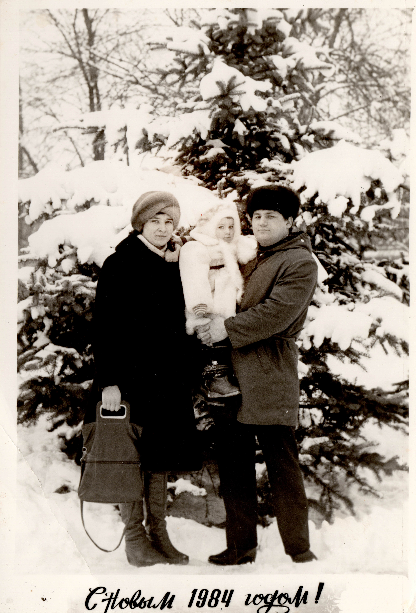
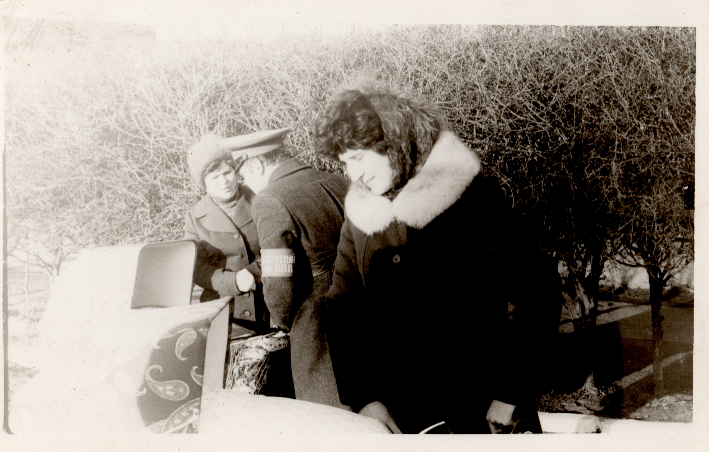
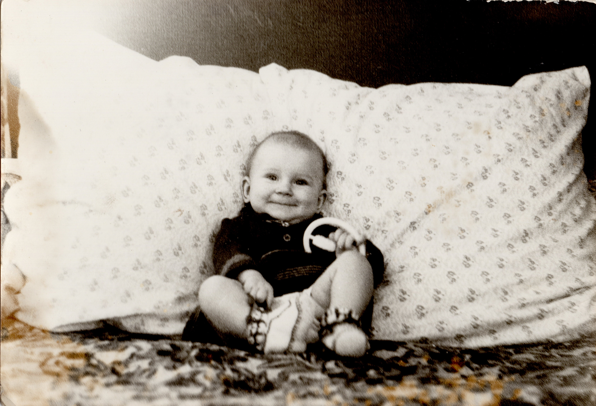
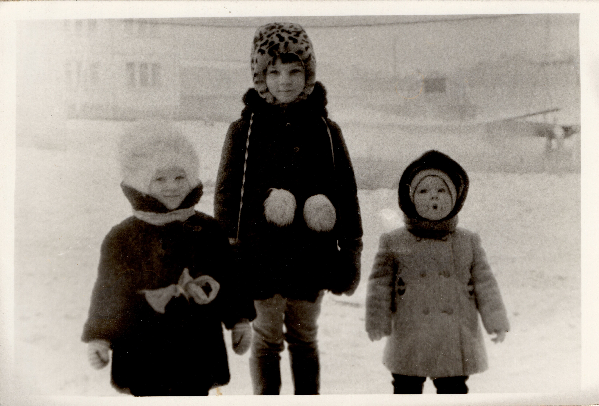
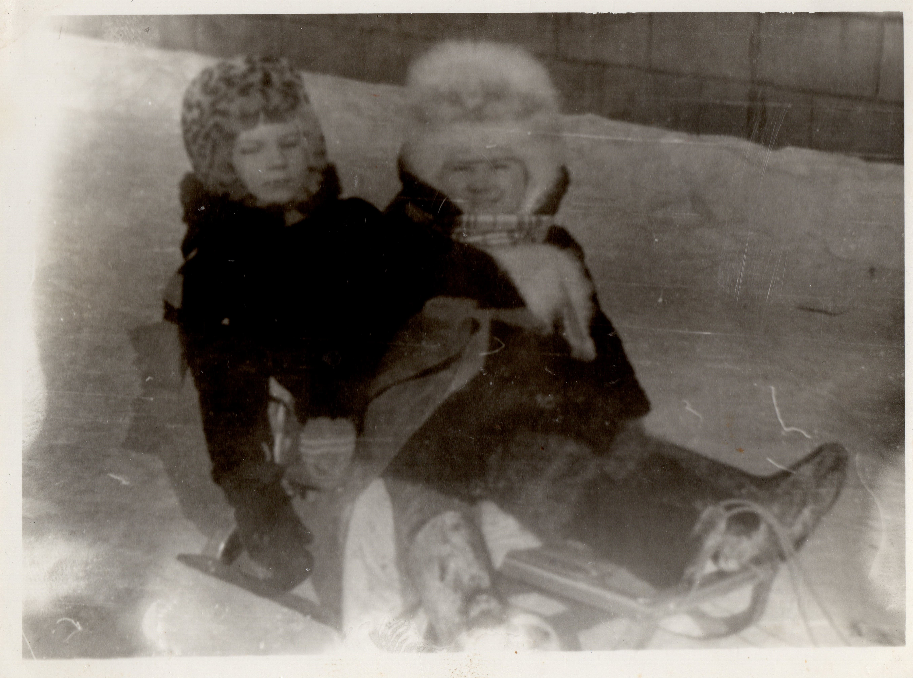

Мій шлях

{kind=link}
Як і у всіх, мій життєвий шлях почався з дитинства. Вперше мої очі побачили світ у місті Магдебург, що в Німеччині,
де татко працював військовим, а мати вчителювала.
Але з цього цікавого періоду життя, окрім маминої з татом посмішки,
я майже нічого не пам’ятаю, бо невдовзі батька перевели до міста Енгельса, що в Росії, поблизу Саратова, і сім’я поїхала обживатися на новому місці.

{kind=link}
Про цей цікавий період у мене вже більше спогадів. Я добре пам’ятаю широку річку, що звалася Волгою і новенький міст через неї довжиною в 2 кілометри.
Ще в пам’яті маленької дівчинки залишилися великий акваріум з рибками, біля якого я проводила увесь час, якщо вдавалося з татом побути на його роботі.
Та у військовій частині я з татом була вкрай рідко, більше на футбольному полі, де мені було дозволено подавати м’яч, що вилетів за межі поля і це приносило неабияк мене тішило.

Та у військовій частині я з татом була вкрай рідко, більше на футбольному полі, де мені було дозволено подавати м’яч, що вилетів за межі поля і це приносило неабияк мене тішило.
{kind=link}
Та все ж більшість часу я проводила у дитячому садочку, де смакувала свій улюбленій омлет (а інколи і бурульки), гралася з друзями (Денис Цветков, Діма
Белоусов, Вова Кацауров) та отримувала перші уроки з образотворчого мистецтва, на яких ми полюбляли малювати фарбами, ліпити з пластиліну та робити вироби
з паперу. Добре закарбувався в пам’яті і двір з каруселями, і п’ятиповерховий будинок, у якому ми мешкали.

Ще згадується кабінет зубного лікаря, де я була частим гостем (за найменшої нагоди вела батьків до лікаря, бо добра тітонька давала мені пусті коробочки
та тару з під ліків), але все змінилося, коли в шестирічному віці я потрапила до села…
Батьки вирішують повернутися на батьківщину і сім’я переїжджає до села Лимана, що на Харківщині. Тут маленькій дівчинці вже все видається по-іншому.

Батьки вирішують повернутися на батьківщину і сім’я переїжджає до села Лимана, що на Харківщині. Тут маленькій дівчинці вже все видається по-іншому.
{kind=link}
В кабінеті зубного лікаря вона знайомиться зі страшною бурмашиною, та ще й тітонька лікар не дала більше ніяких дарунків,
але ж кращого було набагато більше. Вона з радістю зрозуміла, що на долівці в одноповерховому будинку можна бігати, і навіть стрибати,
не чекаючи, що зараз прибіжить лаятися сусід з нижнього поверху. Та й на грунтівку падати приємніше ніж на асфальт (нарешті коліна перестали
бути зеленого кольору). Та найбільшим щастям виявилися дідусь з бабусею, для яких маленька Тетянка була найбільшою втіхою. Тепер, увесь час
я проводила граючись зі своєю меншою сестричкою Оксанкою вдома, або у бабусі з дідусем.

{kind=link}
Та невдовзі у 1989 році я пішла до Лиманської середньої школи. З’явилися нові друзі. І тепер більшість часу після школи я проводила
зі шкільною подругою та іншими дітьми, що проживали поряд. Йшли роки… В школі я займалася добре. А ще й намагалася удосконалити своє вміння
малювати. Принцеси, що переважно красувалися на моїх дитячих малюнках почали змінюватися трояндами.
І власниками намальованих листівок з
трояндами ставали однокласники та знайомі. Коли я в черговий раз дарувала, намальовану листівку, Сергій Клочко попрохав мене її підписати
зі словами: «Постав підпис, а я її збережу, а коли станеш відомим художником…», тоді я навіть мріяти про таке не могла, але підпис все ж
вигадала. Малювати мені хотілося завжди. Згадується, коли хлопці на свято 8 березня в 5 класі влаштували свято вони попрохали місцеву поетесу Віру Колєснікову скласти про нас вірші, попередньо надавши їй
характеристики дівчат з класу. Вірш присвячений мені виявився таким:
«Наша Таня все фарбує,
Краще всіх вона малює.
І старанна, і дбайлива,
Тільки дуже соромлива».


Та в селі не було школи і навіть гуртка де б навчали дітей малюванню. Тому опановувати це мистецтво мені доводилось самій. І тільки в старших класах, коли я почала замислюватися ким я хочу стати. Я почала готуватися до вступу у ВУЗ з Климентієвим Ігорем Миколайовичем, але вже через декілька занять він залишає сусіднє містечко, де я відвідувала його уроки і виїздить з країни. Далі я трішки займалася з Ісичко Генадієм Миколайовичем, що закінчив архітектурний інститут. Та вступити до ВУЗу, де б я могла застосувати свої здібності в образотворчому мистецтві мені не судилося…
…І в 1998році, після того як я з медаллю закінчила школу, я була зарахована до Харківського Банківського коледжу…
..У цьому ж рожі я вийшла заміж… та тяга до малювання не покидає мене. Не дають спокою картини, що прикрашали оселю бабусі. Та дідусеві слова: «Як намалюєш таку картину, тоді визнаю, що ти вмієш малювати». І я намагаюся акварельними фарбами повторити картину з бабусиної оселі. Це була вільна копія картини Брюллова «Італійський полудень» написана невідомим художником…
… Після закінчення з червоним дипломом коледжу я продовжую навчатися у Харківській академії Банківської справи та починаю працювати у відділенні Банку. Вже з першої
зарплатні купую для себе олійні фарби та за сприяння чоловіка, який подарував полотно та пензлі починаю писати… Згодом я починаю доповнювати свої полотна віршованими
рядками та створювати картини й із берести. Часу на творчість не вистачає, однак бажання творити мене не покидає. Тому напевне більшість робіт написані під час
декретних відпусток. А їх було аж три, бо Бог подарував мені трьох прекрасних донечок. У своїх роботах, що написані на пленерах, я намагаюся змалювати околиці
рідного села: озера, ліс, мальовничі береги Сіверського Дінця, що протікає поблизу села. Природа рідного краю зачаровує, тому, мабуть, не даремно я вважаю її найкращим
учителем.
Виставкова діяльність:
• 2008р. – участь в обласній виставці «З народних джерел» в Музеї народного мистецтва Слобожанщини;
• 2012р. – участь в обласній виставці «Мальовнича Зміївщина» в центрі культури та мистецтва;
• 2016р. - участь у виставці присвяченій художнику Сергію Майбороді «На пагорбах сходжень...» у Зміївському краєзнавчому музеї.
• 2017р. – участь у міжнародному пленері «По місцях Зінаїди Серебрякової» з подальшими виставками у Зміївському краєзнавчому музеї, Музеї славетних харків’ян ім. К.Шульженко, Харківської художньої галереї імені Г.Семирадського, Харківського художнього музею, Пархомівського художнього музею ім. О.Ф. Луньова, Центральної наукової бібліотеки ХНУ ім. В.Н.Каразіна.
• 2016р. - персональна виставка в Зміївському краєзнавчому музеї.
• 2018р. – дипломант міжнародної виставки-конкурсу живопису «Український тиждень мистецтв» у Центральному будинку Художника (Київ);
• 2018р. - персональна виставка в Харківському обласному Центрі культури та мистецтв;
• 2018р. - персональна виставка в Харківському художньому музеї;
• 2018р. – учасниця виставки «Слобожанське розмаїття» в Харківському обласному Центрі культури та мистецтв;
• 2018р. – персональна виставка в центрі «Імідж» м. Чугуїв;
• 2018р. - учасниця всеукраїнської Ювілейної виставки до 80 річчя ХОНСХУ.
• 2018р. – персональна виставка в галереї «Мистецтво Слобожанщини» м. Харків.
• 2018р. - персональна виставка «Слобожанщина - мій рідний край» у інформаційно-виставковому центрі «Бузок» м. Харків.
• 2018р. – всеукраїнська «Різдвяна виставка» в Будинку художника м. Харків.
• 2018р. – виставка «Портрет родини в інтер’єрі» в галереї «Мистецтво Слобожанщини» присвячена пам’яті З. Серебрякової. м. Харків.
• 2019р. – виставка «Портрет родини в інтер’єрі» присвячена пам’яті З. Серебрякової. м. Чугуїв.
• 2019р. – міжнародна виставка "Арт-Поезія – Тиждень мистецтв в Ізраїлі", тема: «Мистецтво та поезія» м. Тель-Авів (Ізраїль).
• 2008р. – участь в обласній виставці «З народних джерел» в Музеї народного мистецтва Слобожанщини;
• 2012р. – участь в обласній виставці «Мальовнича Зміївщина» в центрі культури та мистецтва;
• 2016р. - участь у виставці присвяченій художнику Сергію Майбороді «На пагорбах сходжень...» у Зміївському краєзнавчому музеї.
• 2017р. – участь у міжнародному пленері «По місцях Зінаїди Серебрякової» з подальшими виставками у Зміївському краєзнавчому музеї, Музеї славетних харків’ян ім. К.Шульженко, Харківської художньої галереї імені Г.Семирадського, Харківського художнього музею, Пархомівського художнього музею ім. О.Ф. Луньова, Центральної наукової бібліотеки ХНУ ім. В.Н.Каразіна.
• 2016р. - персональна виставка в Зміївському краєзнавчому музеї.
• 2018р. – дипломант міжнародної виставки-конкурсу живопису «Український тиждень мистецтв» у Центральному будинку Художника (Київ);
• 2018р. - персональна виставка в Харківському обласному Центрі культури та мистецтв;
• 2018р. - персональна виставка в Харківському художньому музеї;
• 2018р. – учасниця виставки «Слобожанське розмаїття» в Харківському обласному Центрі культури та мистецтв;
• 2018р. – персональна виставка в центрі «Імідж» м. Чугуїв;
• 2018р. - учасниця всеукраїнської Ювілейної виставки до 80 річчя ХОНСХУ.
• 2018р. – персональна виставка в галереї «Мистецтво Слобожанщини» м. Харків.
• 2018р. - персональна виставка «Слобожанщина - мій рідний край» у інформаційно-виставковому центрі «Бузок» м. Харків.
• 2018р. – всеукраїнська «Різдвяна виставка» в Будинку художника м. Харків.
• 2018р. – виставка «Портрет родини в інтер’єрі» в галереї «Мистецтво Слобожанщини» присвячена пам’яті З. Серебрякової. м. Харків.
• 2019р. – виставка «Портрет родини в інтер’єрі» присвячена пам’яті З. Серебрякової. м. Чугуїв.
• 2019р. – міжнародна виставка "Арт-Поезія – Тиждень мистецтв в Ізраїлі", тема: «Мистецтво та поезія» м. Тель-Авів (Ізраїль).